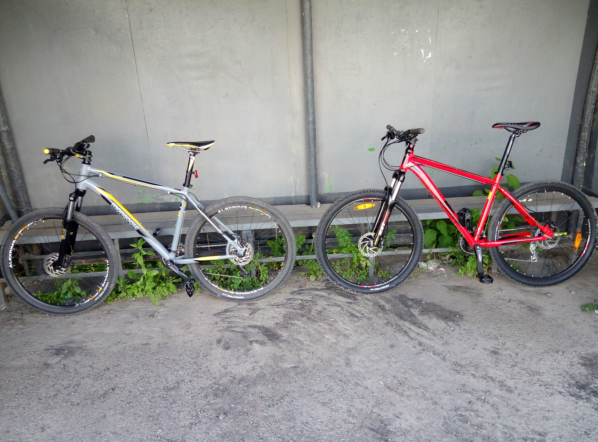
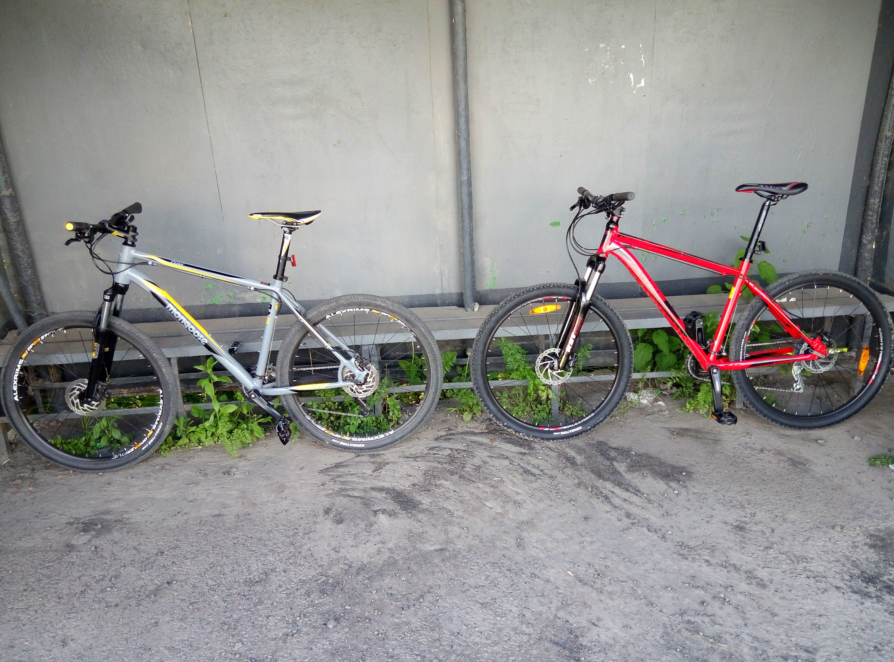
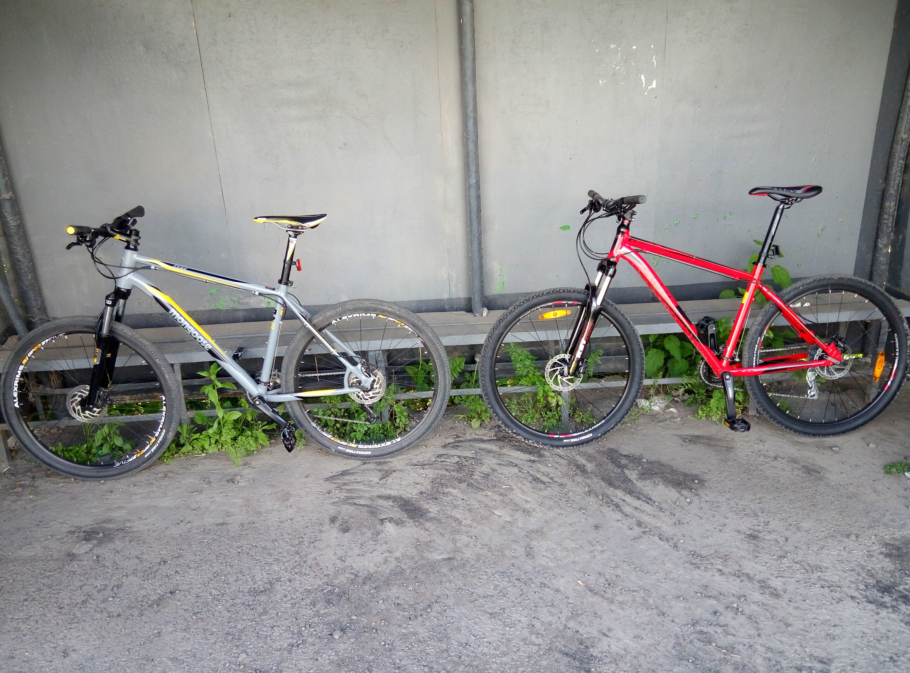

Ми називаємо велосипед "ровер" - слово, яке широко використовувалося в Західній Україні до початку війни. Зараз в Україні слово "велосипед" набуло більшого вжитку, але люди в Західній Україні, особливо в селах, як і раніше часто кажуть “ровер”.
Перші велосипеди, які були продані в Західній Україні були зроблені британською компанію Starley & Sutton (пізніше компанія Rover):
"На початку 1880-х років, доступними велосипедами були відносно небезпечні пенні-фартинги або триколісні з високим колесом. Джон Кемп Старлі увійшов в історію в 1885 році, виробляючи безпечні велосипеди Rover, що мали задній ланцюговий привід з двома колесами однакового розміру... Ровер Старлі, як правило, описується істориками як перший впізнаваний сучасний велосипед".
"Rower - польське слово, яке зараз найчастіше використовується для велосипеда - походить від велосипедів Rover, обидва колеса яких були одного і того ж розміру (попередні моделі зазвичай мали одне велике, інше менше колесо - див. Пенні-фартинг, і називалися в польському bicykl, від англійського велосипед).
" Слова для “велосипед” у польській мові (rower) і білоруській (Rovar, Ро́вар) є похідними від імені компанії . Слово “ровер” також використовується обширно на Західній Україні».
